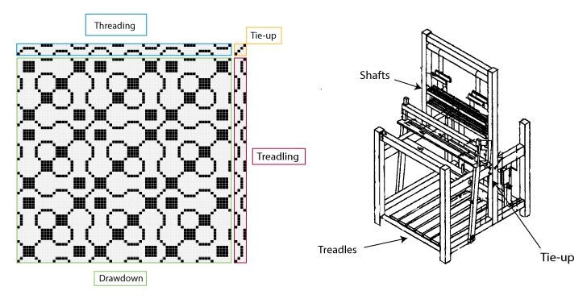
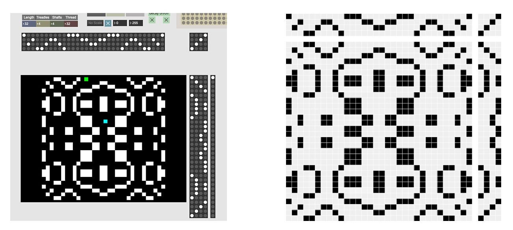
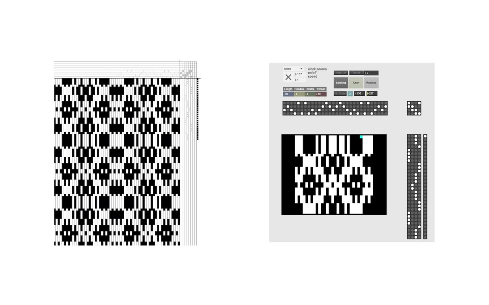
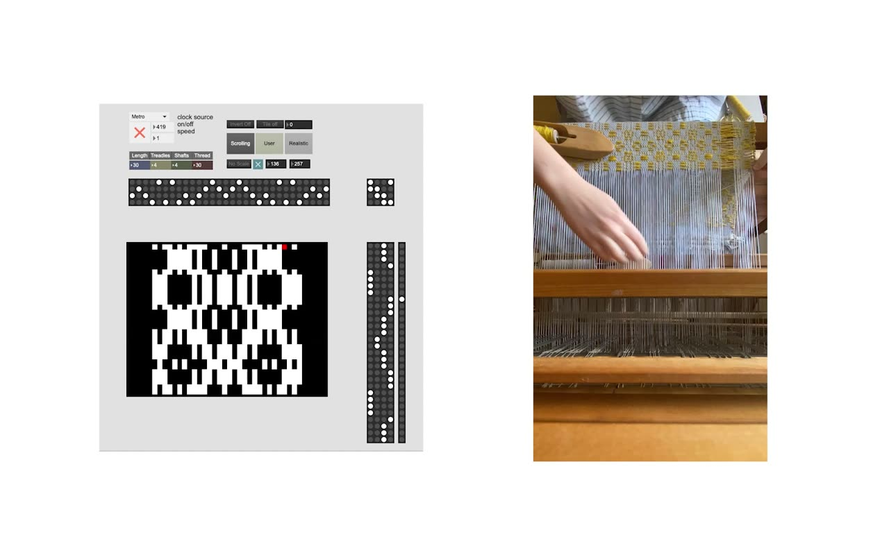

Performing the Program: Using weaving drafts to interface a floor loom with parameter-based electronic instruments
PubPub Link
https://nime.pubpub.org/pub/1ux1qeto/draft?access=g8vxhced
Conference Abstract
We demonstrate our weaving draft interface for musical composition and performance with parameter-based electronic instruments. Through our process, we draw parallels between the mechanics of floor loom weaving, sound synthesis, and computation. Here, the weaving draft acts as an interface that enables a floor loom to influence the parameter values of a parameter-controlled electronic instrument as it weaves, allowing for the instrument and the floor loom to be guided by a common pattern. Though the weaving draft interface is compatible with a large number of MIDI-based programs and hardware instruments, we focus on its use with a modular synthesizer. This interface is being developed through an ongoing collaborative project where we explore commonalities between weaving and music technology. Our demonstration results in both a woven textile and a corresponding sonic work that are both derived from the same weaving draft.
Requirements
Equipment - the work is demonstrated with a floor loom, a computer with an audio interface, and any parameter-controlled electronic music instrument. This could be anything from a software-based synthesizer, to a hardware instrument or a custom Max patch. We primarily use a modular synthesizer as the instrument, which has a MIDI/CV converter (a DC-coupled interface would work just as well). Additionally, we use a small cardioid microphone and a contact microphone to interface loom gestures with the Max patch.
Space – this project has been shown in a gallery space, which is very suitable, as we are able to clearly show the textile work while performing. The project requires that the space is set up to accommodate the acoustic sound of the floor loom along with the amplified sound coming from the computer or hardware.
Program Description
Showcase Overview
Our demonstration represents an iteration of a larger, ongoing collaborative project, draft/patch/weave. The interface we have developed is a key part of our process, in which we produce a sound work and a textile from the same pattern, i.e. a weaving draft. Each iteration begins with a weaving draft that is either researched, modified, or developed from scratch. We identify the common mechanics of the floor loom and electronic instruments in the high/low values that are generated by reading through the draft. Where each value corresponds to a thread that is raised or lowered on a loom, it can correspond to any one-dimensional parameter value on an instrument. A central part of our process lies in the interpretation of the weaving draft as it is realized in sound and thread, and this common mechanic serves as a jumping-off point.
Technical Introduction
Weaving Basics
Our weaving draft interface is created in Max/MSP and uses microphones and programmed patterns as inputs, and it outputs both MIDI information and analog control signals. Weaving drafts typically describe a pattern through three matrices of binary values, which are synthesized as a preview in a fourth matrix called the drawdown. Each of the three outer matrices corresponds to a part of a floor loom. The threading matrix describes how vertically running threads (warp) are arranged on a shaft (row) in a series of headles (thin rods of metal or string which hold each warp strand in place). The treadling matrix describes a sequence of treadles (foot pedals) that are pressed in order of top to bottom on the draft. When a treadle is pressed, it activates rows of warp threads by raising the corresponding shaft. The configuration of connections between treadles and shafts is described in the tie-up matrix, which associates particular columns of the treadling matrix with particular rows of the threading matrix.


Fig. 1: Example weaving draft and a diagram of floor loom.
Implementation
The weaving draft interface built in Max closely resembles drafts made either manually or using other weaving design programs (such as WeaveIt). This system accommodates a range of options that allow for an expressive interpretation of the weaving draft while maintaining meaningful connections between instrument parameters and weaving mechanisms.
Because this style of draft notation is commonplace and correlates with the mechanical aspects the loom, the interface in Max becomes a digital abstraction of loom mechanics by logically combining rows of bits on the threading matrix that are triggered by the right-hand treadling matrix.


Fig. 2 - Left - screenshot of weaving draft interface. Right - manually created weaving pattern.
To control electronic instruments, we output each line of the weaving as it is written into the drawdown as a numerical string. We typically output 16 or more values at a time, making the draft into a kind of macro-controller. Analog signal outputs and MIDI messages are generated by interpolating between low-states and high-states as a function of time between each treadling stage.
While we use this method to control a modular synthesizer in this demonstration, we also see its immediate, and perhaps more direct use in controlling “bank-based” technologies, such as a filter bank or an additive-style synthesizer.

Fig. 3 - Visual feedback of output signals, corresponding to rows of a weaving draft.
We also incorporate auxiliary outputs of note or event triggers via the right-hand treadling matrix and have experimented with event triggering by detecting the onsets of positive values as we scan across the drawdown.
When synchronizing the modular synthesizer and the floor loom, there is a notable difference between the time taken to weave an individual row on the floor loom compared to the pattern being written by the computer. While the weaving draft interface can follow the pace of the loom, it can also compress that time, or iterate through the pattern by reacting to gestures picked up by the microphones. The weaving sequence can be clocked internally or externally using either a contact mic and window comparator or momentary switch, which allows us to vary clocking precision and can be set to immediately advance the sequence upon being triggered or as a measurement for a tempo follower.
MEDIA

▶Demonstration video

▶Comparison of speed differences between the computer program and the floor loom. A moderate pace within the program is roughly equivalent to a ten minute timelapse of floor loom weaving.
Previous work examples (weaving, pattern, and sound composition):
Excerpt of performance at Tiger Strikes Asteroid Gallery
Acknowledgements
We would like to thank Tiger Strikes Asteroid Gallery in Philadelphia for their support and exhibition of this project through their Artist-in-Residence program, to Sarah Belle Reid for her encouragement and feedback of the project in its early stages, and to Umanesimo Artificiale for their support and for connecting us with Sarah.